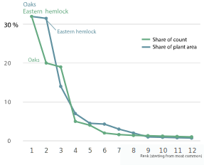

Thain Forest canopy in the winter. Photo and picture edit: Laura Kukkonen
Data can save forests, too
A mature forest in the middle of the Bronx is a home to more native species than decades ago. The success in conserving the forest is is due to hard work, good management and data.
It's a brisk Sunday morning in late February. The sun is shining, the fingers are freezing, and the chirping of birds is almost covering the humming noise of traffic nearby. Squirrels and robins are rustling beneath the understory as you enter the old forest in the New York Botanical Garden.
The 20 hectares that is left of a mature forest which once covered much of New York City has been taken care of by the Botanical Garden since 1895. Now it goes by the name Thain Family Forest.
It may come as a surprise that there even is a forest this old left in the City. To add to that, it is even thriving.
But that's not by coincidence, says Eliot Nagele, who used to manage the forest as part of the New York Botanical Garden. Now Nagele works as Director of Lands at the Nature Conservancy, a global environmental nonprofit.
Mature forest in the middle of the New York Botanical Garden
Thain
Family
Forest
Thain
Family
Forest
Tree textabout trees
Some text Some text
1937
1985